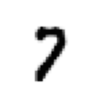
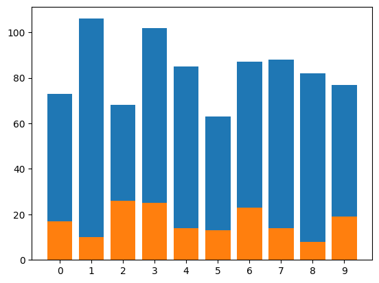
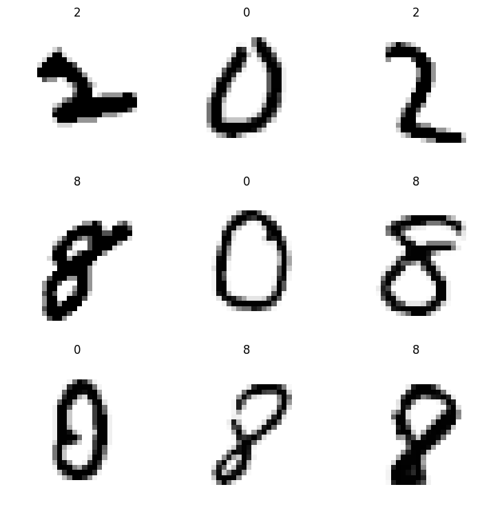
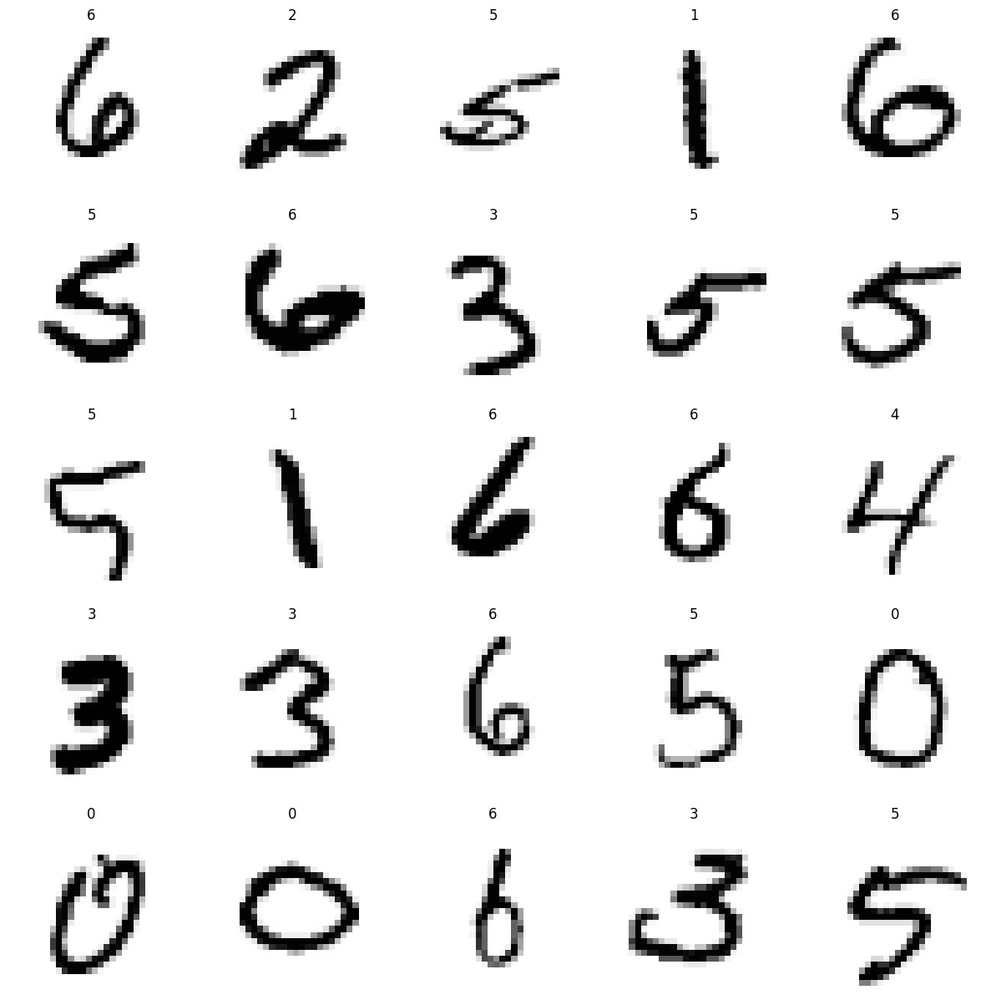
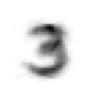

from fastai_datasets.mnist import TinyMNIST, MNISTPatches - enhancing fastai’s data classes
Using monkey patching to add functionality to fastai’s native classes
Lazy Subsets
TfmdLists.sublist
TfmdLists.sublist (indices:Iterable[int])
a sublist that maintains laziness
l = TfmdLists(list('abcd'), 'f({})'.format, splits=[[0, 1], [2, 3]])
sub_l = l.sublist([1, 3])
test_eq(sub_l, L('f(b)', 'f(d)'))Each split is also intersected with the requested indices:
test_eq(sub_l.train, L('f(b)'))
test_eq(sub_l.valid, L('f(d)'))Datasets.sub_dsets
Datasets.sub_dsets (indices:Iterable[int])
ds = Datasets(list('abcd'), ['f({})'.format, 'g({})'.format], splits=[[0, 1], [2, 3]])
sub_ds = ds.sub_dsets([1, 3])
test_eq(sub_ds, L(('f(b)', 'g(b)'), ('f(d)', 'g(d)')))Each split is also intersected with the requested indices:
test_eq(sub_ds.train, L([('f(b)', 'g(b)')]))
test_eq(sub_ds.valid, L([('f(d)', 'g(d)')]))DataLoader.sub_dl
DataLoader.sub_dl (indices:Iterable[int])
dl = ds.dl()
sub_dl = dl.sub_dl([1, 3])
test_eq(sub_dl.dataset, sub_ds)SubDataLoaders inherit their parent’s parameters:
dl = ds.dl(shuffle=True, bs=10, after_item=lambda o: o[1])
sub_dl = dl.sub_dl([1, 3])
test_eq(sub_dl.shuffle, dl.shuffle)
test_eq(sub_dl.bs, dl.bs)
test_eq(sub_dl.after_item, dl.after_item)Random Subsets
Datasets.random_sub_dsets
Datasets.random_sub_dsets (size, with_replacement=False, less_ok=False)
test_eq(len(ds.random_sub_dsets(2)), 2)test_fail(partial(ds.random_sub_dsets, size=6, less_ok=False))
test_eq(len(ds.random_sub_dsets(6, less_ok=True)), len(ds))DataLoader.random_sub_dl
DataLoader.random_sub_dl (*args, with_replacement=False, less_ok=False)
dl = ds.dl()
test_eq(dl.random_sub_dl(2).n, 2)Arithmetics
Concatenating TfmdLists
l1 = TfmdLists(list('abc'), 'f({})'.format, splits=[[0, 1], [2]])
l2 = TfmdLists(list('bcd'), 'g({})'.format, splits=[[0], [1, 2]])
test_eq(l1 + l2, L('f(a)', 'f(b)', 'f(c)', 'g(b)', 'g(c)', 'g(d)'))Also concatenates each split separtely:
test_eq((l1+l2).train, l1.train + l2.train)
test_eq((l1+l2).valid, l1.valid + l2.valid)Shares common transform postfix to allow showing:
mnist = TinyMNIST()
concat_l = mnist.tls[0]+mnist.tls[0]
show_at(concat_l, 0)<AxesSubplot:>
Concatenating Datasetss
ds1 = Datasets(list('abc'), ['f1({})'.format, 'f2({})'.format], splits=[[0, 1], [2]])
ds2 = Datasets(list('bcd'), ['g1({})'.format, 'g2({})'.format], splits=[[0], [1, 2]])
test_eq(ds1 + ds2, L(('f1(a)', 'f2(a)'), ('f1(b)', 'f2(b)'), ('f1(c)', 'f2(c)'),
('g1(b)', 'g2(b)'), ('g1(c)', 'g2(c)'), ('g1(d)', 'g2(d)')))Also concatenates each split separtely:
test_eq((ds1+ds2).train, ds1.train + ds2.train)
test_eq((ds1+ds2).valid, ds1.valid + ds2.valid)Subtracting SubDatasets
test_eq(ds-sub_ds, L(('f(a)', 'g(a)'), ('f(c)', 'g(c)')))
test_eq((ds-sub_ds).train, L([('f(a)', 'g(a)')]))
test_eq((ds-sub_ds).valid, L([('f(c)', 'g(c)')]))Concatenating DataLoaders
dl1 = ds1.dl()
dl2 = ds2.dl()
test_eq((dl1+dl2).dataset , ds1+ds2)Dataloaders have to have identical parameters:
test_fail(lambda: ds1.dl(shuffle=False) + ds2.dl(shuffle=True))
test_fail(lambda: ds1.dl(bs=16) + ds2.dl(bs=32))
test_fail(lambda: ds1.dl() + ds2.dl(after_item=lambda o: o[0]))Targets
Datasets.i2t
Datasets.i2t ()
ds = Datasets(list('abcd'), ['f({})'.format, 'g({})'.format, 'h({})'.format])
test_eq(ds.i2t, L('h(a)', 'h(b)', 'h(c)', 'h(d)'))Datasets.by_target
Datasets.by_target ()
ds = Datasets(range(10), [noop, [lambda o: ['Even', 'Odd'][o%2], Categorize()]])
test_eq(ds.by_target.keys(), ['Even', 'Odd'])
test_eq(ds.by_target['Even'], L((i, ds.vocab.o2i['Even']) for i in [0, 2, 4, 6, 8]))
test_eq(ds.by_target['Odd'], L((i, ds.vocab.o2i['Odd']) for i in [1, 3, 5, 7, 9]))We can also partition DataLoaders by targets:
DataLoader.by_target
DataLoader.by_target ()
dl = ds.dl()
test_eq(dl.by_target.keys(), ds.by_target.keys())
for k in ds.by_target.keys():
test_eq(dl.by_target[k].dataset, ds.by_target[k])Datasets.plot_class_distribution
Datasets.plot_class_distribution ()
MNIST().plot_class_distribution()
Loading
Common default parameters for dataloaders:
ListToTuple
ListToTuple (enc=None, dec=None, split_idx=None, order=None)
Transforms lists to tuples, useful for fixing a bug in pytorch (pin_memory turns inner tuples into lists)
dl_defaults = {'pin_memory': default_device() != torch.device('cpu'), 'device': default_device(),
'after_item': [ToTensor], 'after_batch': [ListToTuple, IntToFloatTensor]}Convenience methods for creating loaders with dl_defaults
Datasets.dl
Datasets.dl (**kwargs)
Creates a DataLoader (ignoring splits) with defaults from dl_defaults
Datasets.dls
Datasets.dls (**kwargs)
Calls Datasets.dataloaders with defaults from dl_defaults
For small enough datasets, we might want to load all of it to memory:
Datasets.load
Datasets.load (**kwargs)
mnist = TinyMNIST()
x, y = mnist.random_sub_dsets(10).load()
test_eq(x.shape, [10, 1, 28, 28])
test_eq(y.shape, [10])Misc
Datasets.subsets
Datasets.subsets ()
Lazy list of a Datasets’s subsets
ds = Datasets(list('abcd'), ['f({})'.format, 'g({})'.format], splits=[[0, 2], [1, 3]])
test_eq(ds.subsets, L(ds.train, ds.valid))Datasets.resplit
Datasets.resplit (splits:Union[Callable,List[List[int]]])
Sets the splits of a Datasets
| Type | Details | |
|---|---|---|
| splits | typing.Union[typing.Callable, typing.List[typing.List[int]]] | a splitter function or a list of splits |
ds = Datasets(list('abcd'), ['f({})'.format, 'g({})'.format], splits=[[0, 2], [1, 3]])
ds.resplit(EndSplitter(.75))
test_eq(ds.splits, [[0], [1, 2, 3]])Datasets.repr
Datasets.repr shows all splits:
ds = Datasets(list('abcd'), ['f({})'.format, 'g({})'.format], splits=[[0, 2], [1, 3]])
for split in ds.subsets:
assert repr(split) in repr(ds)Usage Examples
from fastai_datasets.all import *mnist = MNIST()Show dataset structure:
mnist[(#60000) [(PILImageBW mode=L size=28x28, TensorCategory(7)),(PILImageBW mode=L size=28x28, TensorCategory(7)),(PILImageBW mode=L size=28x28, TensorCategory(7)),(PILImageBW mode=L size=28x28, TensorCategory(7)),(PILImageBW mode=L size=28x28, TensorCategory(7)),(PILImageBW mode=L size=28x28, TensorCategory(7)),(PILImageBW mode=L size=28x28, TensorCategory(7)),(PILImageBW mode=L size=28x28, TensorCategory(7)),(PILImageBW mode=L size=28x28, TensorCategory(7)),(PILImageBW mode=L size=28x28, TensorCategory(7))...]
(#10000) [(PILImageBW mode=L size=28x28, TensorCategory(7)),(PILImageBW mode=L size=28x28, TensorCategory(7)),(PILImageBW mode=L size=28x28, TensorCategory(7)),(PILImageBW mode=L size=28x28, TensorCategory(7)),(PILImageBW mode=L size=28x28, TensorCategory(7)),(PILImageBW mode=L size=28x28, TensorCategory(7)),(PILImageBW mode=L size=28x28, TensorCategory(7)),(PILImageBW mode=L size=28x28, TensorCategory(7)),(PILImageBW mode=L size=28x28, TensorCategory(7)),(PILImageBW mode=L size=28x28, TensorCategory(7))...]]Let’s sample a random subset:
mnist = mnist.random_sub_dsets(1000)Show its class distribution:
mnist.plot_class_distribution()
Use only the even digits:
evens = mnist.by_target['0'] + mnist.by_target['2'] + mnist.by_target['4'] + mnist.by_target['6'] + mnist.by_target['8']
evens.dls().show_batch()
Drop specific classes:
less_than_7 = mnist - mnist.by_target['9'] - mnist.by_target['8'] - mnist.by_target['7']
less_than_7.dl().show_batch(max_n=25)
Estimate the mean sample from a specific class:
threes_sample = mnist.by_target['3'].random_sub_dsets(20)
threes_sample.load()[0].mean(0).show()<AxesSubplot:>